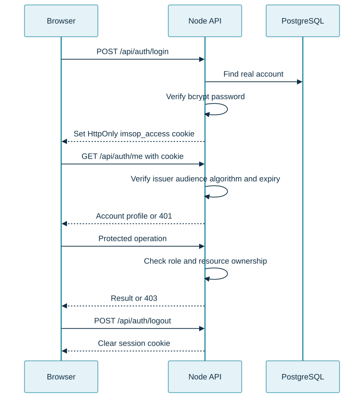
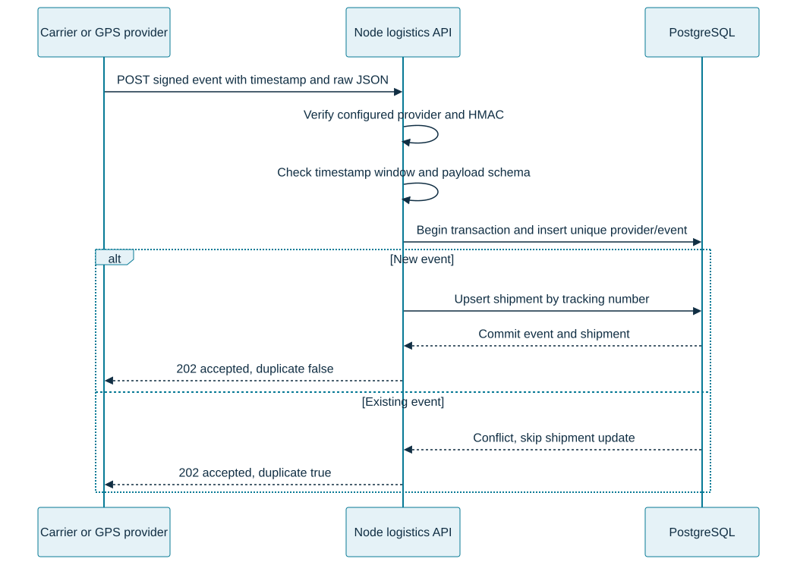

IMSOP API Flows
The React application uses the Node REST API for accounts, operations, telemetry, and reports. The .NET Supply Chain API exposes a separate protected purchase-order path. Paths below are relative to the configured API origin; use the Vercel same-origin proxy in the hosted UI.
Session lifecycle

The production cookie is HttpOnly, Secure, and SameSite=None; development uses SameSite=Lax. Cookie-authenticated unsafe requests must carry an exact allowed Origin unless a bearer authorization header is used. The API also supports bearer authentication for appropriate callers. Password-reset tokens cannot authenticate ordinary requests. The frontend mock-auth adapter is a separate demonstration mode.
Authentication endpoints
| Method | Path | Access / purpose |
|---|---|---|
| POST | /api/auth/login |
Public, rate-limited credential check |
| POST | /api/auth/register |
Public, rate-limited registration subject to server policy |
| GET | /api/auth/me |
Signed-in account |
| POST | /api/auth/logout |
Session termination |
| POST | /api/auth/request-reset |
Rate-limited reset request |
| POST | /api/auth/reset-password |
Expiring reset token and new password |
| PATCH | /api/auth/profile/{id} |
Same-account profile update |
| POST | /api/auth/change-password/{id} |
Same account; current password required |
Real-account passwords must satisfy the API's 12–128 character validation. Reset links expire after 15 minutes. Completing a reset increments password_reset_version, invalidating earlier reset links. Reset versioning is not a claim that every previously issued access token is immediately revoked.
Operations, telemetry, and reports
| Method | Endpoint | Permitted roles |
|---|---|---|
| GET | /api/operations/shipments |
admin, engineer, analyst, user |
| GET | /api/operations/orders |
admin, engineer, analyst |
| GET | /api/operations/shipments/export/report |
admin, analyst |
| GET | /api/operations/orders/export/report |
admin, analyst |
| GET | /api/telemetry |
admin, engineer, analyst |
| POST | /api/telemetry |
admin, engineer |
| POST | /supply-chain/api/v1/orders |
admin, engineer, analyst; .NET purchase-order API through the gateway |
| GET | /supply-chain/api/v1/orders/{id} |
admin, engineer, analyst; .NET purchase-order API through the gateway |
The gateway removes the /supply-chain prefix before forwarding to Supply Chain. Direct private-service requests use /api/v1/orders; that unprefixed path on the public gateway routes to Node instead.
Telemetry ingestion
{"deviceId":"sensor-42","metricName":"temperature","metricValue":22.5}Device and metric names must be non-empty and at most 100 characters. The metric value must be finite. The API supplies the stored timestamp. Unlike signed logistics events, this endpoint has no documented provider/event deduplication key; callers should account for retry duplicates.
Signed logistics provider flow

Endpoint: POST /api/integrations/logistics/{provider}/events.
Headers: X-IMSOP-Timestamp (Unix seconds) and X-IMSOP-Signature (sha256= followed by the hexadecimal HMAC). Sign timestamp + "." + rawBody with the provider's private signing secret. Sign the exact transmitted bytes; reformatting JSON changes the signature. The signature window is five minutes. Use UTC event timestamps and stable provider event IDs.
{
"eventId": "evt-example-001",
"eventType": "shipment.location",
"trackingNumber": "SHP-EXAMPLE-001",
"status": "in_transit",
"occurredAt": "2026-10-21T10:00:00.000Z",
"origin": "Hamburg",
"destination": "Berlin",
"carrier": "Example Carrier",
"transportMode": "road",
"location": {"latitude": 52.52, "longitude": 13.405, "label": "Berlin"}
}Errors and operational checks
Treat 401 as a missing or invalid session, 403 as an authorization denial, and validation errors as requests to correct rather than retry unchanged. A duplicate provider event is an accepted 202 response. On transient delivery failures, preserve the event ID when retrying. Report upstream failures clearly rather than substituting fabricated records.
GET /health reports liveness; GET /ready tests database readiness. Neither alone verifies provider delivery, email, mapping, all permissions, or the end-to-end frontend proxy. Release checks should cover both permitted and denied roles, operations reads, exports, and logout.
Source references
Source review: 21 October 2026. Examples use synthetic records.